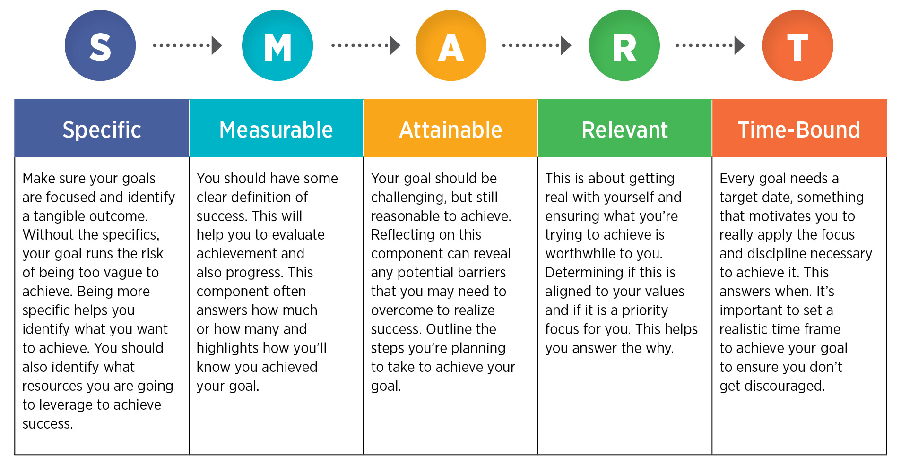

12 Knowledge basket: Professional development task

Image source: https://www.nsta.org/q-if-tree-falls-forest-and-theres-no-one-around-hear-it-does-it-make-sound
If a tree falls in a forest, and there’s no one around to hear it, does it make a sound? Or, more relevant to this course, if you do a data analysis and can’t share it with anyone in helpful ways, did youreally do anything? With this in mind, you will have the opportunity to choose an area of relevant professional development to pursue over the course of the semester. This could include technical skills that make you better at collaborating with others (version control, Git, GitHub), creating things others will find useful (an R package) or practising communication (oral or written).
There is a 1% proposal due fairly early in the semester, and then the final submission of evidence of, and reflection on, your activity is worth 3% and due toward the end of the semster.
Example professional development tasks include:
Learning how to set up and use Git and GitHub (this might come in handy if collaborating on the final project with a group)
Setting up a personal profile website (a bit like a digital CV, GitHub provides free hosting for simple sites)
Participating in weekly TidyTuesday activities
Writing a stats blog
Developing an R package and sharing it on GitHub
A public speaking based activity like a debating society or Toastmasters
Conducting a series of interviews with industry professional or academics and publishing videos/write-ups
Create a wildly successful stats memes TikTok à la Chelsea Parlett-Pelleriti (okay, maybe not this one…but she’s well worth checking out)
Note: the task must be related to communication or collaboration in some way. For example, ‘learning SQL’ would not be sufficiently directly related to communication or collaboration, but developing an R package and sharing it with others requires communication (writing the documentation) and is a great way to contribute to the collaborative and supportive R community. If you are not sure, please ask!
You will use the SMART goals framework (see image below) when setting out your proposal. The more thought you put into this upfront, the easier collecting evidence and reflecting on your progress will be at the end. More information will be available on the respective assessment pages when they go live.
12.1 Professional development proposal
| Information | Note |
|---|---|
| Name | Professional development proposal |
| Type Main, Mini or Basket | Basket |
| Value | 1% |
| Due | Thursday, February 3, 2022 at 3:03 p.m. ET |
| Submission instructions | Submission: PDF via Markus |
| Late submissions, accommodations, and extension policy | In the case of a personal illness/emergency, a declaration can be made, but must be submitted no more than 3 days after the due date. Extensions may be requested through the same form up to 48 hours before the due date. |
12.1.1 Instructions
There is a general overview of this task on the professional development overview page.
Example professional development tasks include:
Learning how to set up and use Git and GitHub (this might come in handy if collaborating on the final project with a group)
- Possible resource: https://happygitwithr.com/
Setting up a personal profile website (a bit like a digital CV, GitHub provides free hosting for simple sites)
- Possible resource: http://jmcglone.com/guides/github-pages/
- Possible resource: https://uoft-doss-issc.github.io/website-workshop/
Participating in weekly TidyTuesday activities
- Possible resource: https://github.com/rfordatascience/tidytuesday
Writing a stats blog
Developing an R package
- Possible resource: https://r-pkgs.org/index.html
A public speaking based activity like a debating society or Toastmasters
Conducting a series of interviews with industry professional or academics and publishing videos/write-ups
Create a wildly successful stats memes TikTok à la Chelsea Parlett-Pelleriti (okay, maybe not this one…but she’s well worth checking out)
1. Choose a professional development task that you can devote at least 5–10 hours to over the next several weeks.
2. Work through the SMART goals framework to describe what you will do. The more thought you put into this upfront, the easier collecting evidence and reflecting on your progress will be at the end. More information will be available on the respective assessment pages when they go live.
3. Explain WHY the goal is a good choice for you and your career/further education path (‘Relevant’ criteria).
12.1.2 Submission requirements
Your proposal should be:
typed (not handwritten)
one page8
single-spaced
size 12 font
margins should be no larger than 1 inch
saved as a PDF
With these specifications, your proposal will be approximately 500 words.
12.1.3 Rubric
| Component | Missing 0% | Poor 25% | Adequate 50% | Good 75% | Excellent 100% | Points |
|---|---|---|---|---|---|---|
| Specific | There is no goal stated. | Goal is too generic and poorly specified. | Goal is stated but it is not specific. At least one resource may or may not be listed. | Goal is specific but no/unclear resource is mentioned. | Goal is specific. At least one resource that will be used to help is mentioned. | 1 |
| Measurable | There is no measure for attaining the goal. | Minimal evidence of consideration for measuring progress towards the goal or success. | Definition of success lacks clarity. Measures of progress may or may not be listed. | What success will look like is clearly defined but there no/unclear statement of measure of progress. | Both definition of success and a measure of progress are clearly defined. | 1 |
| Attainable | There is no explanation for how the goal is to be attained. | Inappropriate scope, not believable that the goal is attainable. | Some issues with the scope of the goal, may not be attainable. Understanding of the steps and potential problems very limited. | Goal has a mostly appropriate scope but may lack some clarity around steps to take and potential problems. | Goal has an appropriate scope, and a strong understanding of the steps to take and potential problems is shown. | 1 |
| Relevant | Goal is not related to communication or collaboration appropriate for statisticians/data-related roles AND no discussion of why this goal was chosen. | Goal is not related to communication or collaboration appropriate for statisticians/data-related roles but some discussion of why this goal was chosen OR goal is appropriate, but no discussion of personal relevance. | Goal is tenuously related to communication or collaboration appropriate for statisticians/data-related roles but good discussion of why this goal was chosen OR goal is appropriate, but limited discussion of personal relevance. | Goal is related to communication or collaboration appropriate for statisticians/data-related roles AND there is a reasonable discussion of personal relevance. | Goal is related to communication or collaboration appropriate for statisticians/data-related roles AND there is a clear discussion of personal relevance. | 2 |
| Time-bound | There is no timeline or evidence of consideration of time-bounding the goal. | Minimal evidence of consideration time-bounding the goal. | Timeline is not listed according to days/weeks or dates. Time for delays and troubleshooting may or may not have been considered. | Timeline is listed based on days/weeks or dates. No/unclear time for delays and troubleshooting is considered. | Timeline is listed based on days/weeks or dates. Time for delays and troubleshooting is considered. | 1 |
| Structure | There is no structure, very difficult to follow. | Minimal evidence of an attempt to structure the proposal logically. | Some structure but difficult to follow. | The organization follows some logical structure. | Well organized, follows a logical structure. | 1 |
| Writing mechanics | No response OR response is largely unintelligible. | Considerable writing and grammatical issues that completely obscure the meaning OR lots of slang and inappropriate word choice. | Multiple sections are difficult to read but it is otherwise understandable. | Slight difficulty in understanding one or two sections. | Can read and follow along with minimal effort. Some grammatical or word choice errors are allowable, but they must not obstruct meaning. | 2 |
| Conclusion | There is no concluding sentences. | Minimal evidence of a concluding statement. | The conclusion is weak not well supported. | A conclusion is present but does not completely summarise the central idea. | There is a clear central idea that is well summarised in a concluding sentences. | 1 |
12.1.4 Checklist
Before submitting your proposal, check the following:
Your goal is specific. (Specific)
At least one resource you will use to help you is identified. (Specific)
It is clear how you will define success.(Measurable)
It is clear how you will measure your progress. (Measurable)
Your goal has an appropriate scope and is attainable. (Attainable)
- This is shown through a description of the steps you’ll need to take and what potential problems you might face. Related to timeline below.
The goal is related to communication and/or collaboration appropriate for a statistician/data-related role. (Relevant)
It is clear why this goal is relevant to you personally. (Relevant)
The steps you want to complete can be completed in 7 weeks. (Attainable and Time-bounded)
A timeline with dates/weeks for the required steps is included. (Time-bounded)
The timeline shows some accommodation for troubleshooting/delays. (Time-bounded)
There is a clear concluding sentence or sentences that wrap(s) up the proposal.
You have proofread your proposal and made sure the structure is logical and there are not intrusive grammatical or word choice errors.
You have written in full sentences.
Your submission is typed (not handwritten), one page, single-spaced with size 12 font and the margins are no larger than 1 inch.
Your final version is saved as a PDF.
12.1.5 Things to keep in minds as you start working towards your professional development goal
Track your time
- A time sheet should be part of your evidence submission
Create a work log document or file to store screenshots in, make notes of tasks you’ve completed
- This will make writing your reflection much easier
12.1.6 Example smart goal
Note: This is not a collaboration/communication goal, but provides some examples of how to approach a SMART goal. Where there are ellipses (“…”) we are suggesting there would be more of the same, but this example should be enough to give you the idea. You should not use ellipses in this way in your own proposal.
12.1.6.1 Specific
Goal: “Climb to the peak of Mount Robson over 2 weeks in January and write one blog post for my website about the journey.”
Bad example: “Climb a mountain and write about it.” Which mountain? What type of writing and with what purpose?
Resources: “I will need climbing equipment, my camera, notebook …”
12.1.6.2 Measurable
Defining success: "Reach the peak of Mount Robson and return and write at least 1 blog entry with a picture about the journey, all in 2 weeks."
Bad example: “Climbed Mount Robson.” Needs more details about what this success looks like. Walk up a few metres and turn back? Relates to time-bounded also.
Measuring my progress: “I will measure my progress by how many steps of my goals I have accomplished and the altitude of my climb relative to the elevation of Mount Robson (3,954 m). I will have taken a picture”
12.1.6.3 Attainable
You have or can you learn the required skills: “I am sufficiently fit to make this climb safely and have climbed a similar mountain recently. I have a camera and am currently taking an online course on blogging.”
Possible steps I need to take:
Arrive at Mount Robson Visitors Center with my climbing plan.
Climb until … on first day.
…
- Write one blog entry with one picture.
Bad example: “Make progress with my goal by 7% each day.” Not useful to you, what does 7% actually mean here? Will it really be the same amount of progress every day?
Potential problems:
- Weather might be bad, and I may have to delay my climb by a few days.
Bad example: “Something might not work.” What? In what way? Could you solve it?
12.1.6.4 Relevant
Personal relevance: "The climbing experience will help me learn new skills like … which will help me work towards becoming a professional climbing guide."
Bad example: “Seems like fun.”
12.1.6.5 Time-bounded:
“A 2-week journey from Jan 25th:Days 1-3to climb;Days4-6return;5 days for delays;3days to rest.”

Source: Canadian Management Center, https://cmcoutperform.com/setting-smart-goals
12.2 Professional development evidence and reflection
| Information | Note |
|---|---|
| Name | Professional development evidence & reflection |
| Type Main, Mini or Basket | Basket |
| Value | 3% |
| Due | Thursday, March 31, 2022 at 3:03 p.m. ET |
| Submission instructions | Submission: PDF via Markus |
| Late submissions, accommodations, and extension policy | In the case of a personal illness/emergency, a declaration can be made, but must be submitted no more than 3 days after the due date. Extensions may be requested through the same form up to 48 hours before the due date. |
You may wish to use the provided template to complete this task. This is not required to get full marks, but we believe this will be a helpful structure for you to ensure you have addressed all parts of the task.
12.2.1 Templates
12.2.2 Reflection and evidence components
12.2.2.1 Activity, alignment and lessons
Activity: Describe what you did and what you learned. Be specific but you don’t need a step-by-step guide or dates, save that for your timesheet. Assume your reader has not read your proposal and that you are introducing your goal and plan to them for the first time. (It may help to imagine how you might explain this task and your progress in a job interview.)
12.2.2.1.1 Examples
- I wrote 4 blog posts on …. The first one was on … One unanticipated activity I had to do was …
- This task helped me learn how to write for general audience…
- Through this task I improved my…
Alignment: How well did your activity and progress align with your proposal?
12.2.2.1.2 Examples
- My plan changed as my goal was not specific enough. I think the reason for this is … I can set realistic goals next time by …
- Most of my attainable steps and potential problems were correctly identified because ….
- This is a good method which I will use again when I need to …
- My way of measuring progress worked because … This is useful for next time because …
Lessons: What did you learn from using the SMART goal-setting experience?
12.2.2.1.3 Examples
- An interesting thing I learned from the SMART goal-setting exercise was that …
- I prefer to modify the format of SMART goals to match my work habits by …
12.2.2.2 Evidence
Provide links and/or copy/paste a screenshot of a blog, website, Github repository, Rmd document, … Provide commentary on what the image/link is and what it demonstrates. I.e., Describe what we should be seeing and understanding from what you’ve included and how it relates to your goals.
12.2.2.3 Timesheet
Include a timesheet that briefly describes how you used your time (no specific format required, but something like the below is fine). Hours spent can be approximate.
Describe what you learned from filling your timesheet. This can be short and could include how you’d track your time differently in future, what you noticed about your work habits from tracking your time
12.2.2.3.1 Examples
About …% of my time was spent preparing, maybe because the task was new. This means for future tasks that are new I need to consider ….
The timesheet can be better suited to my work habits if …
| Week | Week starts on (Monday) |
Time spent (Hrs) |
Activity (Brief description of what was done, e.g. what you read, what you tried on GitHub or state.) |
|---|---|---|---|
| 5 | Feb 7 | 1.5 | Example: Worked through chapters 1 & 2 of … |
| 6 | Feb 14 | 0 | Example: No progress this week |
| Feb 21 | Reading week | ||
| 7 | Feb 28 | 1 | Example: Set up postcard home page and pushed to GitHub … |
| 8 | Mar 7 | 2 | Example: Wrote one blog entry about … |
| 9 | Mar 14 | 1.5 | Example: Fixed coding error that …[reason for error] .. by [fix] … |
| 10 | Mar 21 | 2 | Example: Edited the video on [topic] … using [software] … |
12.2.3 Recommended structure
You do not have to set out your writing in this way to get full marks, but we believe this will be a helpful structure for you to ensure you have addressed all parts of the task.
| # | Section heading | Format |
|---|---|---|
| 1 | Activity, alignment and lessons | ~3 paragraphs:
|
| 2 | Evidence |
|
| 3 | Timesheet |
|
12.2.4 Rubric
| Component | Missing 0% | Poor 25% | Adequate 50% | Good 75% | Excellent 100% | Points |
|---|---|---|---|---|---|---|
| Activity description | Missing | Limited description of task, insufficient detail to understand the scope of activity. | Some description of the activity, but too general and/or would require the reader to have some previous knowledge of the goal/activity chosen to fully under it. | Mostly clear description of activity but lacking some specificity or does not fully introduce the task for a reader with no previous knowledge of the tasks. | Clear and specific description of the activity undertaken. Appropriately introduced for a reader with no background knowledge of the task. | 2 |
| Alignment | Missing | Limited description of alignment with original proposal. Lacks specifics and clear reasoning. | Some description of alignment with original proposal, though lacking reflective depth. | Reflection on alignment with proposal provides some specific details and reasoning for changes/successes. | Reflection on alignment with proposal is insightful and specific, detailing what went to plan/what didn’t and any changes that needed to be made, as appropriate. | 2 |
| SMART goal-setting lessons | Missing | Limited description of lessons learned from the SMART goal setting approach. | Some description of lessons learned from the SMART goal setting approach, though lacking reflective depth. | Reflection on lessons learned from the SMART goal setting approach provides some specific details | Reflection on lessons learned from the SMART goal setting approach is insightful and specific. | 2 |
| Evidence | Missing | Insufficient evidence provided. No explanation or relation to goal was not clear. | Some evidence provided but aspects of explanation/commentary were not clear and/or the relationship to the goal not well described. | Evidence provided with commentary and the relationship to the goal described. | Relevant evidence provided with clear commentary on what it demonstrated and how it related to the goal described. | 1 |
| Timesheet | Missing | Some hours or activity descriptions missing/insufficient. No description of what was learned from the time tracking activity. | Some hours or activity descriptions missing/insufficient. Some description of what was learned from the time tracking activity. | Timesheet complete but insufficient description of what was learned from the time tracking activity OR timesheet somewhat complete but good description of what was learned from the time tracking activity. | Timesheet complete and a clear and relevant description of what they learned from the time tracking activity. | 1 |
| Structure | Missing | Minimal evidence of an attempt to structure logically. | Some structure but difficult to follow. | The organization follows some logical structure. Paragraphs either don’t have topic sentences or have unrelated ideas. | Well organized, follows a logical structure. Paragraphs have topic sentences and contain related ideas. | 1 |
| Writing mechanics | Missing | Considerable writing and grammatical issues that completely obscure the meaning OR lots of slang and inappropriate word choice. | Multiple sections are difficult to read but it is otherwise understandable. | Slight difficulty in understanding one or two sections. | Can read and follow along with minimal effort. Some grammatical or word choice errors are allowable, but they must not obstruct meaning. | 1 |
References, if relevant, may be included on a second page, but a simple hyperlink may also be sufficient. References are not required.↩︎